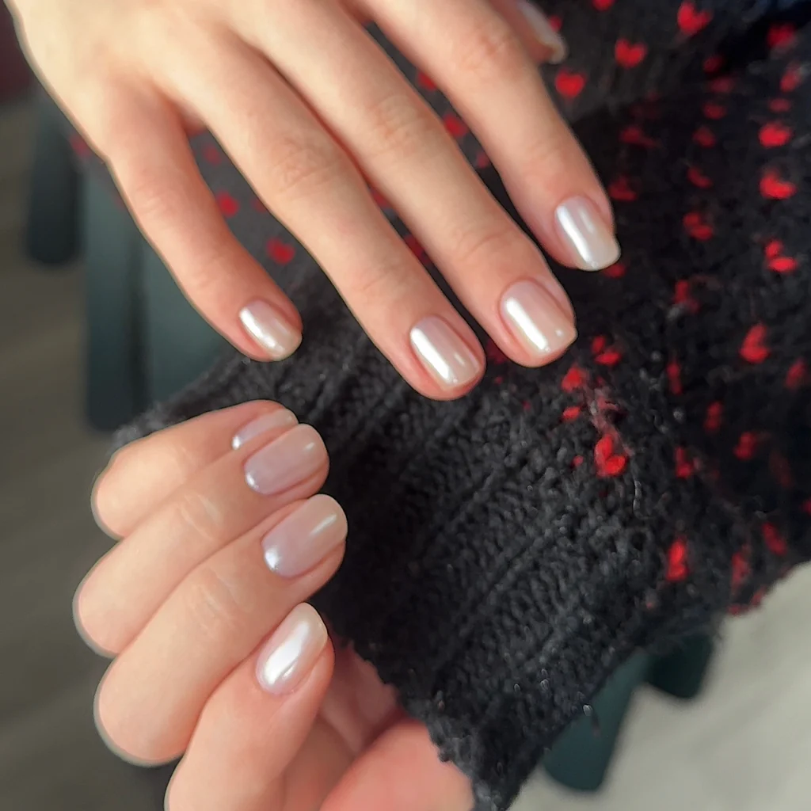
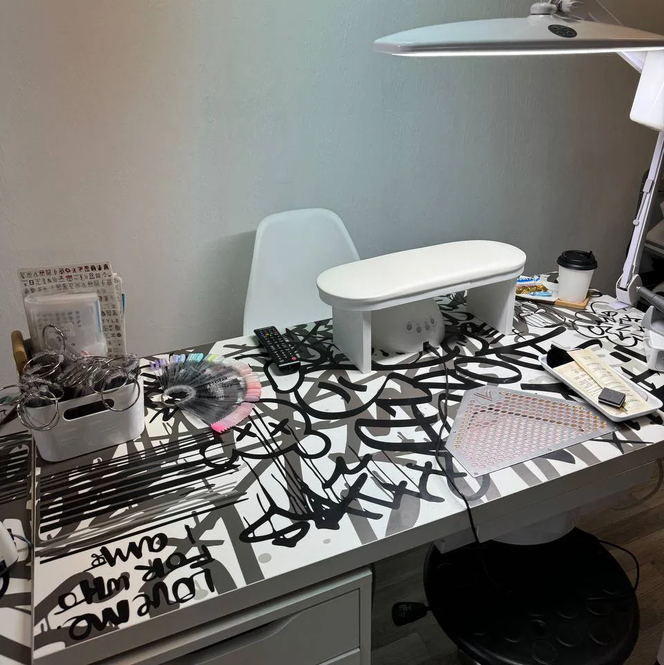
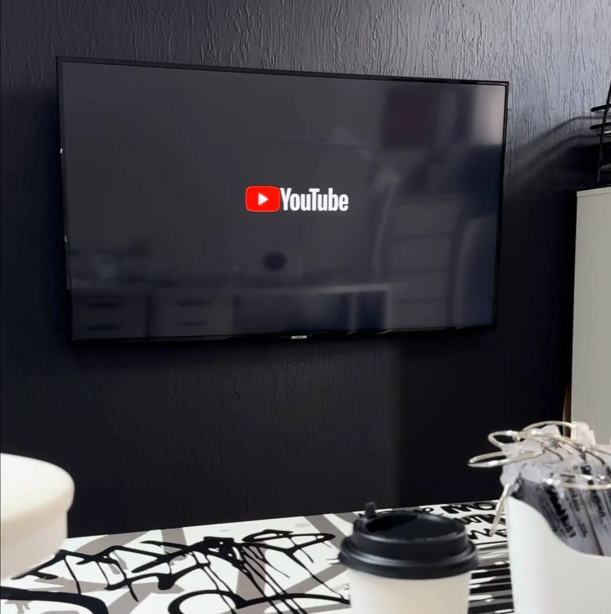

студия маникюра и педикюра
Mallinail – студия маникюра и педикюра в центре Новосибирска
Аккуратный маникюр и педикюр с покрытием, большой выбор оттенков и дизайн под ваше настроение. Пока я работаю, вы отдыхаете: кофе, чай и фильм на большом экране.
ПОЧЕМУ Я?
- 10 летв сфере
- 4 неделигарантия
- 500+ цветовв палитре
- ∞ количестводизайнов
О мастере
Привет! Меня зовут Алина.
Я мастер маникюра и педикюра.
В приоритете у меня здоровье и безопасность ваших ногтей. Я постоянно улучшаю свои навыки, изучаю новые техники и материалы.
Профессионализм, оборудование, стерилизация, выбор материалов для работы – это мои личные ответственность и гордость.
Студия
В моем кабинете: комфортно, уютно, стерильно. Платная охраняемая парковка, натуральный кофе, травяной чай, угощения, тапочки, огромная плазма, зарядки на телефоны, wi-fi.


Услуги
Делаю маникюр и педикюр: классические и с покрытием. Покрытие подбираем вместе – гель-лак, дип-система или плёнки для педикюра. Если на ногтях старое покрытие, аккуратно сниму его в начале визита.
Цены и свободное время видно в онлайн-записи.
Выбрать времяЧто пишут гости
Алина, уже больше 7ми лет ты делаешь мои руки красивыми! Спасибо большое ❤️
Первый мастер,после которого нет заусенцев от процедуры к процедуре ,спасибо !
Была в студии, очень красиво и комфортно, расположение удобное, всегда предложат чай или кофе, очень приятно. Делают быстро и качественно. Потрясающие ноготочки получились со всеми моими пожеланиями
Была на маникюре с покрытием, очень понравилось, сделали все аккуратно, качественно и без порезов. Огромная цветовая палитра, что аж теряешься с выбором, дизайн на любой вкус. Отличный сервис, чай/кофе конфетки, можно выбрать любой фильм/сериал, пока тебе делают красоту. На входе есть тапочки или бахилы кому что нравится, очень удобно. Результатом довольна, рекомендую, приду ещё😊
Как добраться
Студия в центре, на Советской, 64: пятый этаж, офис 521. От метро «Гагаринская» – 390 м. Рядом есть платная охраняемая парковка.
- Адрес
- Новосибирск, Советская улица, 64, офис 521, 5 этаж
- Телефон
- +7 (960) 905-26-85
- Часы работы
Пн–Вс 10:00–21:00